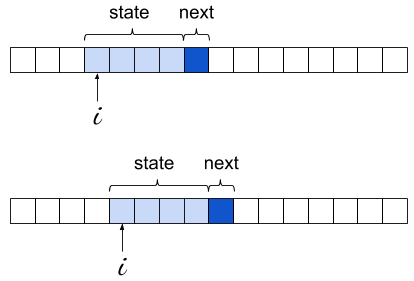

While preparing the post on minimal char-based RNNs, I coded a simple Markov chain text generator to serve as a comparison for the quality of the RNN model. That code turned out to be concise and quite elegant (IMHO!), so it seemed like I should write a few words about it.
It's so short I'm just going to paste it here in its entirety, but this link should have it in a Python file with some extra debugging information for tinkering, along with a sample input file.
from collections import defaultdict, Counter
import random
import sys
# This is the length of the "state" the current character is predicted from.
# For Markov chains with memory, this is the "order" of the chain. For n-grams,
# n is STATE_LEN+1 since it includes the predicted character as well.
STATE_LEN = 4
data = sys.stdin.read()
model = defaultdict(Counter)
print('Learning model...')
for i in range(len(data) - STATE_LEN):
state = data[i:i + STATE_LEN]
next = data[i + STATE_LEN]
model[state][next] += 1
print('Sampling...')
state = random.choice(list(model))
out = list(state)
for i in range(400):
out.extend(random.choices(list(model[state]), model[state].values()))
state = state[1:] + out[-1]
print(''.join(out))
Without going into too much details, a Markov Chain is a model describing the probabilities of events based on the current state only (without having to recall all past states). It's very easy to implement and "train".
In the code shown above, the most important part to grok is the data structure model. It's a dictionary mapping a string state to the probabilities of characters following this state. The size of that string is configurable, but let's just assume it's 4 for the rest of the discussion. This is the order of the Markov chain. For every string seen in the input, we look at the character following it and increment a counter for that character; the end result is a dictionary mapping the alphabet to integers. For example, we may find that for the state "foob", 'a' appeared 75 times right after it, 'b' appeared 25 times, 'e' 44 times and so on.
The learning process is simply sliding a "window" of 4 characters over the input, recording these appearances:
The learning loop is extremely concise; this is made possible by the right choice of Python data structures. First, we use a defaultdict for the model itself; this lets us avoid existence checks or try for states that don't appear in the model at all.
Second, the objects contained inside model are of type Counter, which is a subclass of dict with some special sauce. In its most basic usage, a counter is meant to store an integer count for its keys - exactly what we need here. So a lot of power is packed into this simple statement:
model[state][next] += 1
If you try to rewrite it with model being a dict of dicts, it will become much more complicated to keep track of the corner cases.
With the learning loop completed, we have in model every 4-letter string encountered in the text, mapped to its Counter of occurrences for the character immediately following it. We're ready to generate text, or "sample from the model".
We start by picking a random state that was seen in the training text. Then, we loop for an arbitrary bound and at every step we randomly select the following character, and update the current state. The following character is selected using weighted random selection - precisely the right idiom here, as we already have in each counter the "weights" - the more often some char was observed after a given state, the higher the chance to select it for sampling will be.
Starting with Python 3.6, the standard library has random.choices to implement weighted random selection. Before Python 3.6 we'd have to write that function on our own (Counter has the most_common() method that would make it easier to write an efficient version).